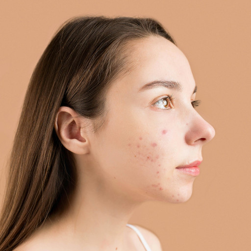
Original
Privacy concerns around ever increasing number of cameras are increasing in today's digital age. Although existing anonymization methods are able to obscure identity information, they often struggle to preserve the utility of the images. In this work, we introduce a training-free method for face anonymization that preserves key non-identity-related attributes. Our approach utilizes a pre-trained text-to-image diffusion model without requiring optimization or training. It begins by inverting the input image to recover its initial noise. The noise is then denoised through an identity-conditioned diffusion process, where modified identity embeddings ensure the anonymized face is distinct from the original identity. Our approach also supports localized anonymization, giving users control over which facial regions are anonymized or kept intact. Comprehensive evaluations against state-of-the-art methods show our approach excels in anonymization, attribute preservation, and image quality. Its flexibility, robustness, and practicality make it well-suited for real-world applications. Code and data can be found at github.com/hanweikung/nullface.
Our anonymization framework integrates diffusion model inversion, a dual-path denoising structure, and modified face embeddings. Given a facial image, we perform DDPM inversion to retrieve the initial noise map xT and a sequence of noise maps {zt}. Face embeddings extracted via a face recognition model are negated with a hyperparameter λid, creating negative identity guides that steer generation away from the original identity during denoising.
The denoising combines conditional and unconditional paths: the conditional path uses negated identity embeddings to obscure identifying features, while the unconditional path preserves non-identifying attributes. Outputs are merged via classifier-free guidance. For localized control, segmentation maps selectively anonymize specific facial regions while preserving others.

Increasing Tskip makes the generated face align more closely with the original image structure and pose.
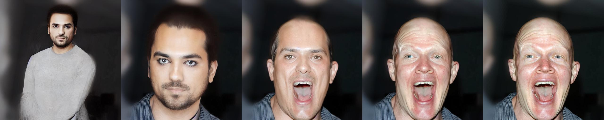
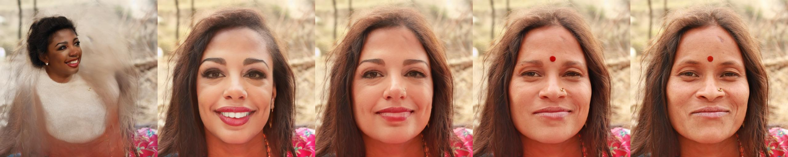
Increasing λid controls how far the anonymized identity drifts from the source.
Higher guidance scale values yield anonymized identities that are more distinct from the originals. However, excessive guidance reduces photorealism.
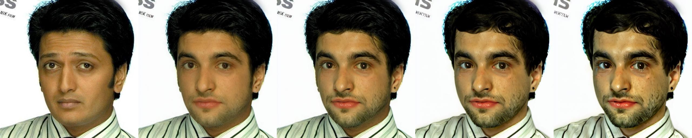
Segmentation masks make it possible to anonymize the full face or keep specific regions visible, such as the eyes, nose, or mouth.
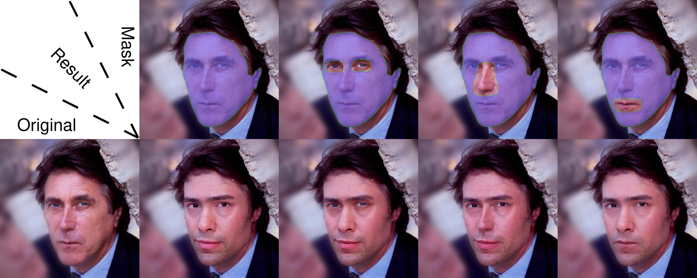
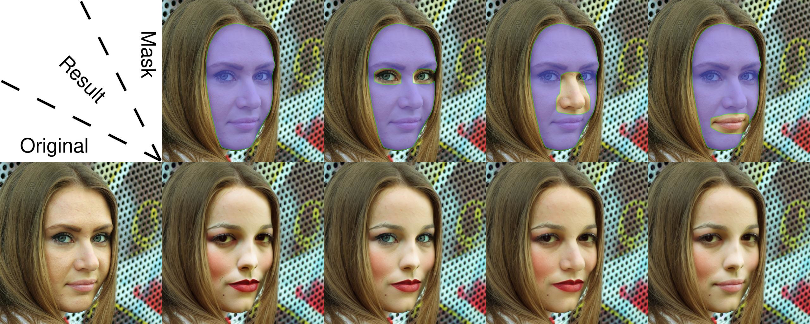
Quantitative results on CelebA-HQ (CHQ) and FFHQ (FHQ). Best results are bold, second-best are underlined.
| Method | Re-ID (%) ↓ | Attribute Distance ↓ | Image Quality ↓ | |||||||||
|---|---|---|---|---|---|---|---|---|---|---|---|---|
| AdaFace | FaceNet | Expression | Gaze | Pose | FID | |||||||
| CHQ | FHQ | CHQ | FHQ | CHQ | FHQ | CHQ | FHQ | CHQ | FHQ | CHQ | FHQ | |
| Ours | 0.208 | 0.343 | 0.289 | 0.383 | 10.034 | 9.852 | 0.165 | 0.186 | 0.053 | 0.056 | 8.223 | 8.779 |
| FAMS | 3.131 | 14.152 | 0.866 | 5.570 | 10.001 | 8.823 | 0.164 | 0.176 | 0.053 | 0.047 | 17.128 | 11.215 |
| FALCO | 0.104 | — | 0.100 | — | 10.208 | — | 0.277 | — | 0.088 | — | 39.168 | — |
| RiDDLE | — | 0.510 | — | 0.042 | — | 10.038 | — | 0.215 | — | 0.081 | — | 69.259 |
| LDFA | 10.284 | 11.152 | 4.275 | 4.925 | 8.647 | 10.387 | 0.260 | 0.353 | 0.092 | 0.113 | 8.058 | 9.946 |
| DP2 | 0.835 | 1.881 | 0.722 | 1.186 | 9.912 | 10.183 | 0.262 | 0.299 | 0.161 | 0.163 | 16.935 | 18.632 |
Privacy–Utility Trade-off Evaluation. The green gradient highlights the optimal zone (lower-left) where both privacy (low Re-ID) and utility (low metric values) are achieved. Our method offers the best balance across all metrics.
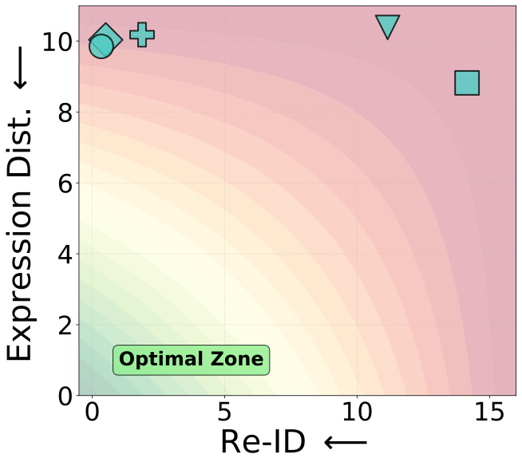
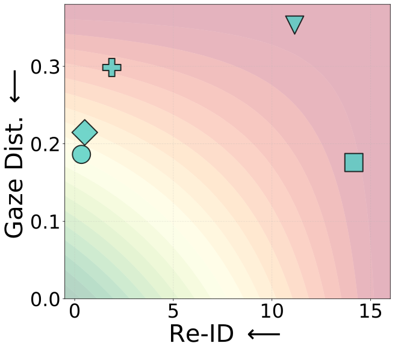
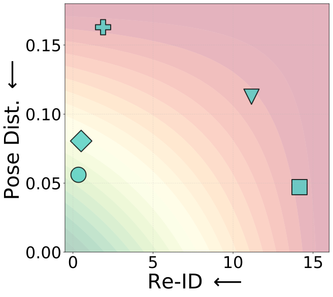
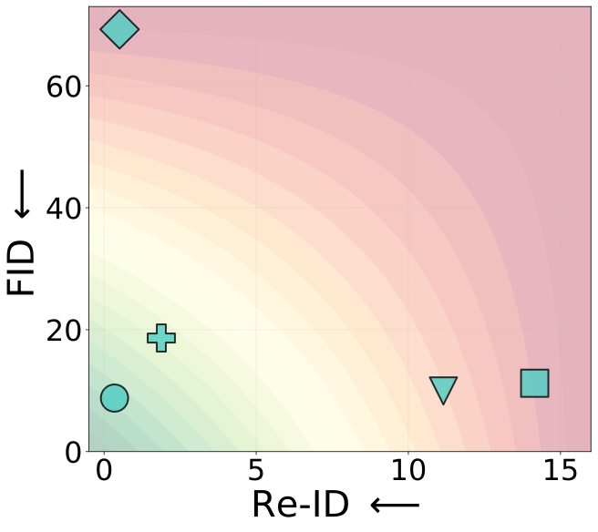
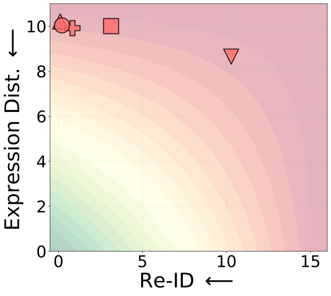
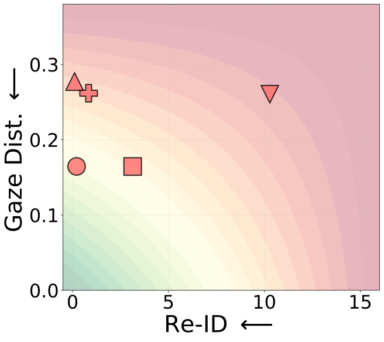
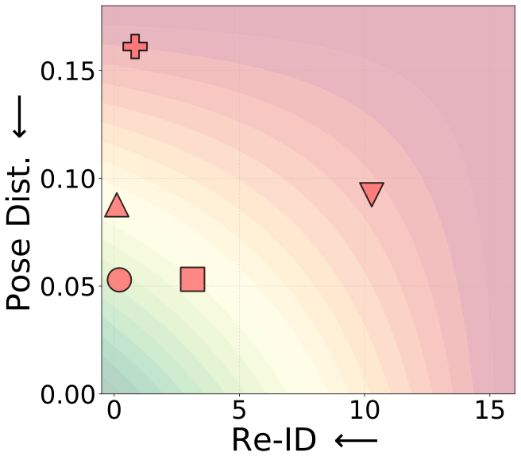
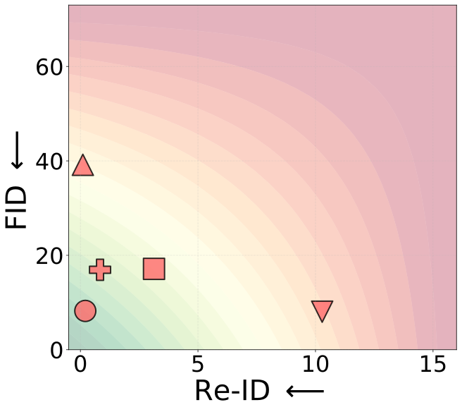
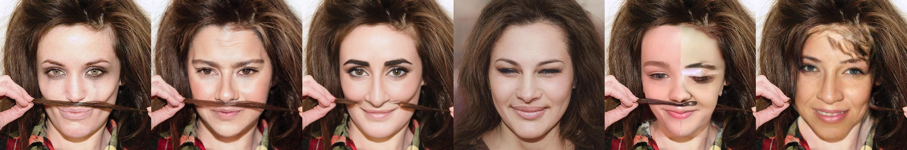
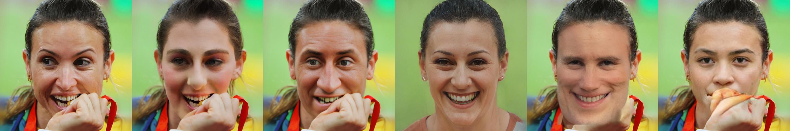
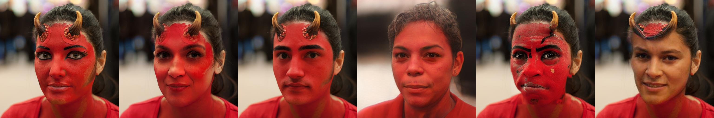
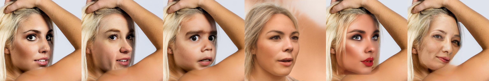
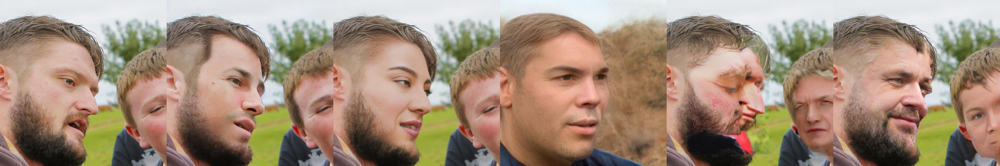
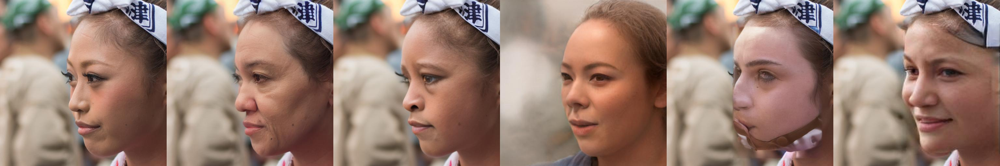
Localized anonymization enables practitioners to share case studies while maintaining patient confidentiality. The example below shows facial identity being anonymized while preserving dermatological symptoms (acne on the cheeks).

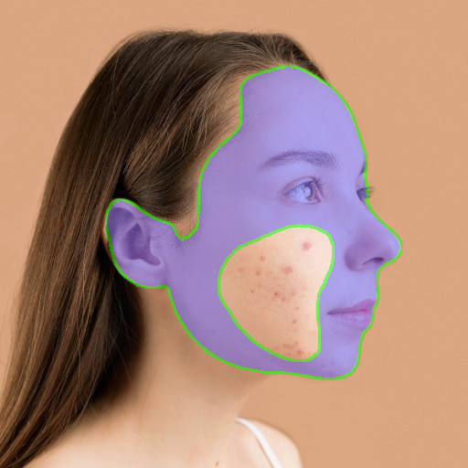